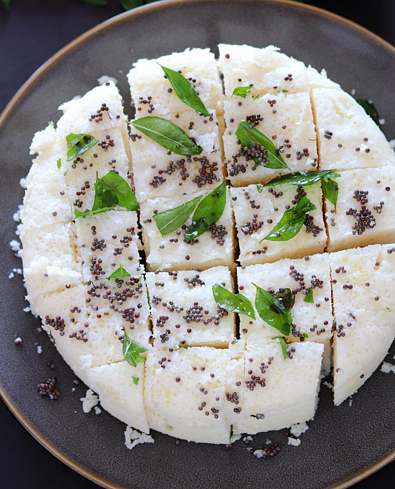
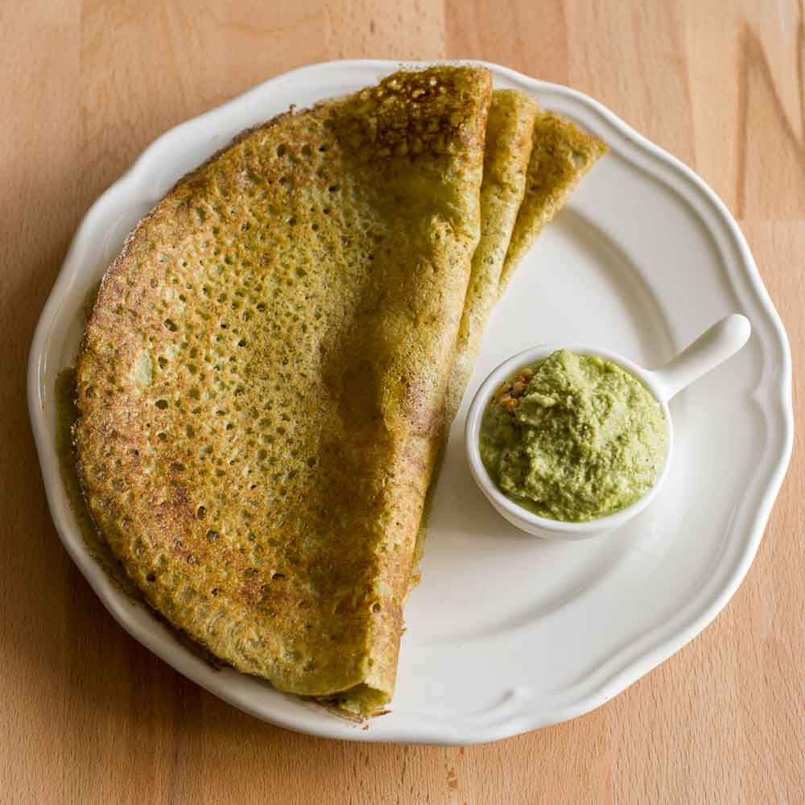
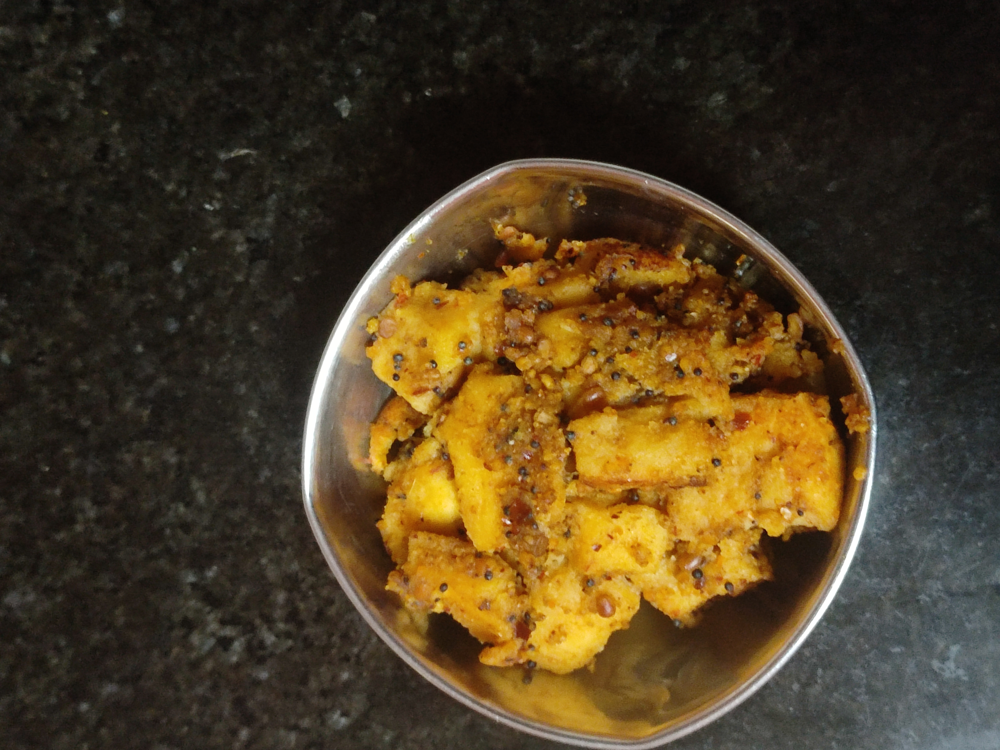

═══════
Recipe Corner
by The Blah Team
═══════
Rava Dhokla
Ingredients
Rava - 1 cup
Curd/Buttermilk - 1 cup
Sugar - 1/2 teaspoon
Ginger-Green chilli paste - 1 teaspoon
Cooking oil - 2 teaspoon
Baking soda or Fruit salt
Mustard seeds
Sesame seeds
Hing (asafoetida or perungayam)
Preparation
1. Add 1 cup of Rava, and 1 cup of thick curd/buttermilk to a large mixing bowl.
2. To the same bowl add 1/2 tsp of sugar, 1 tsp ginger-green chilli paste along with 2 tsp of
oil.
3. Mix well to form a thick batter.
4. Rest for around 20 mins or till the rava absorbs moisture.
5. Further add water as required and mix well.
6. Get the dhokla to idli batter consistency.
7. Add eno fruit salt or a pinch of baking soda.
8. Mix gently till the batter turns frothy.
9. Transfer to a plate greased with oil
10. Immediately steam the dhokla batter for 10 to 15 minutes on medium flame or till the dhokla
gets cooked completely
11. Now cool it for 5 minutes and go on to unmold it
12. Prepare the tempering by heating oil, further add mustard seeds, sesame seeds and hing
(asafoetida or perungayam).
13. Once the tempering splutters spread it over the dhokla
14. For the final touches, a sprinkle of coriander would be apt.
15. Cut it to the desired shape and finally serve the soft and spongy rava dhokla with green
chutney. (Recipe for a variety of chutneys coming next edition, stay tuned!)

Curd Murukku
Ingredients
Rice flour - 2 cups
Sour curd - 1/2 cup
Pottu kadalai flour - 1/2 spoon
Chilli powder - 1 spoon
Butter - 1 spoon
Salt - As per taste
Preparation
Mix all the ingredients in the Sour Curd, sprinkle water if necessary, then deep fry as Murukku

Pessarettu
Ingredients
Moong dal - 1 cup
Onion - 1
Ginger - 1/4 teaspoon (finely chopped)
Coriander leaves (to be finely chopped)
Green chillies - 2
Salt - Add per taste
Preparation
Soak the moong dal for about 4 hours in a bowl of water.
Wash them and grind to make smooth paste along with the chillies and ginger.
Add the chopped onions, chopped coriander leaves and salt to the above prepared paste.
Cooking
Pour the batter on it and spread the batter on the pan moving from center to the corners.
Give it the shape of round dosa.
Sprinkle little oil on its sides and cook it for 2-3 minutes.
Turn over and cook again.
Serve it hot with coconut chutney or ginger chutney

Seeralam
Ingredients
Mixed Paste
Moong dal - 2 cups
Red chillies - 4 nos.
Salt - 1/2 spoon
Seasoning
Oil - 1 tablespoon
Mustard Seeds - 1 tablespoon
Urad Dhal - 2 tablespoons
Fried Dry Powder
Channa Dhal - 2 tablespoons
Urad Dhal - 2 tablespoons
Red Chillies - 5 nos.
Tamarind - 2 tablespoons
Preparation
- Soak the mix paste in water for 2 to 3 hours.
- Grind the above mix with salt.
- Steam the paste in an oven (microwave for 15 minutes) or regular water steamer
- After it gets steamed, cut them into pieces in cube shapes.
- To start the seasoning process, heat the oil and add urad dal & mustard seeds. Now put the cube shaped pieces onto the seasoning.
- Add fried dry powder and tamarind liquid in it.
- Keep the mixture in low flame until the tamarind liquid is absorbed.
- Enjoy the same with mint or tomato chutney.
